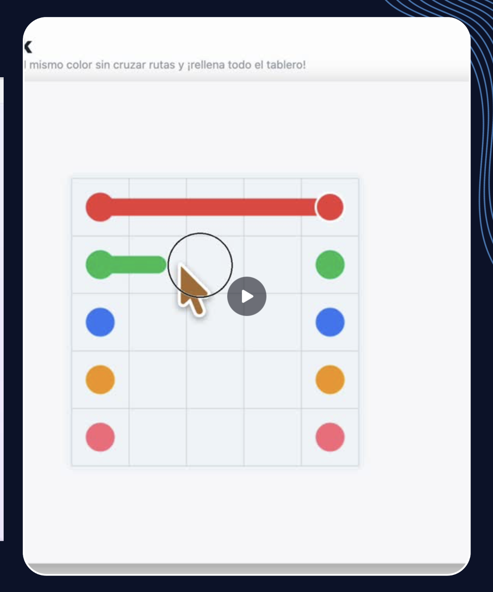
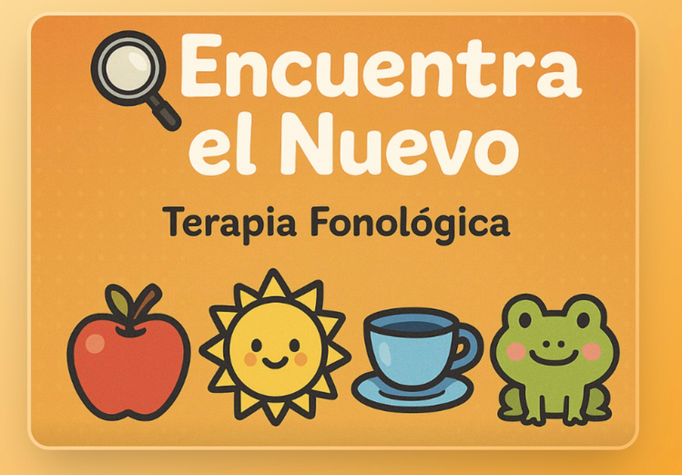
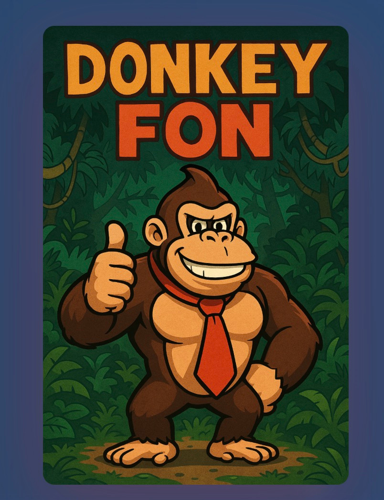
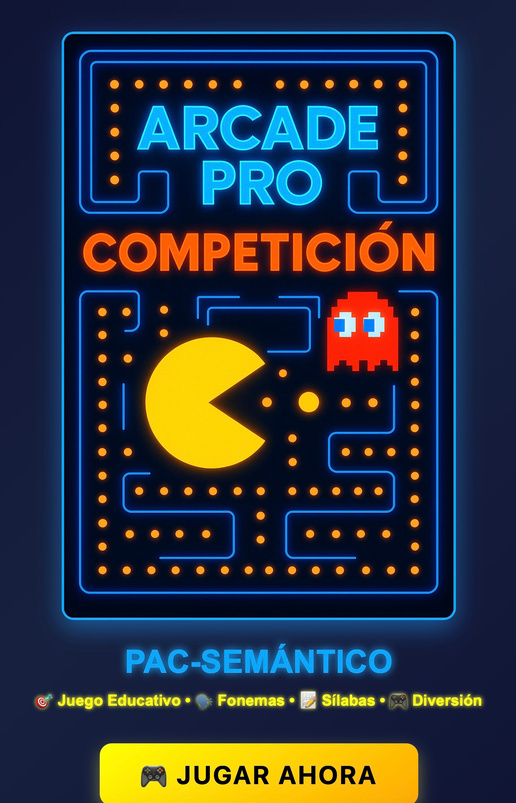

Informes clínicos comprensibles.
Evaluación estructurada con IA: anamnesis guiada paso a paso, registro clínico con escalas y visualización automática de patrones del lenguaje.
El informe se genera en segundos, pero la interpretación sigue siendo del logopeda.
Demo sugerida
- Landing clínica con API conectada.
- Analiza informes en segundos.
- Carga el caso, genera plan completo y PDF final.

Materiales terapéuticos personalizados.
- Videojuegos educativos.
- Adaptación por patología, edad y perfil.
- Personalización rápida de ejercicios.
- Intervención más específica y menos genérica.
“Sin una sola letra de código. Solo prompts e iteraciones.”

Demos que sostienen toda la ponencia.
Verbo Querer Quest
De material tradicional a experiencia jugable, visual y medible.
Fluidez Clínica Lab
Audio real, Whisper, análisis heurístico y apoyo a evaluación.
Karaoke Tartamudez
Ritmo, práctica guiada y engagement.
iSecuencias
Narrativa, secuenciación y ecosistema de herramientas visuales.



Un mismo objetivo terapéutico puede convertirse en papel, digital o videojuego.
Prototipo imprimible
Ficha de categorías, lotos de sonido inicial, tarjetas de sílabas, secuencias y tarea para familia.
Recurso interactivo
Pantallas clicables, feedback, refuerzo visual, narrativa sencilla y adaptación inmediata.
Juego terapéutico
Mismo objetivo clínico, pero envuelto en misiones, ritmo, puntuación y progresión.



Banco de enlaces: intervención y juego.
